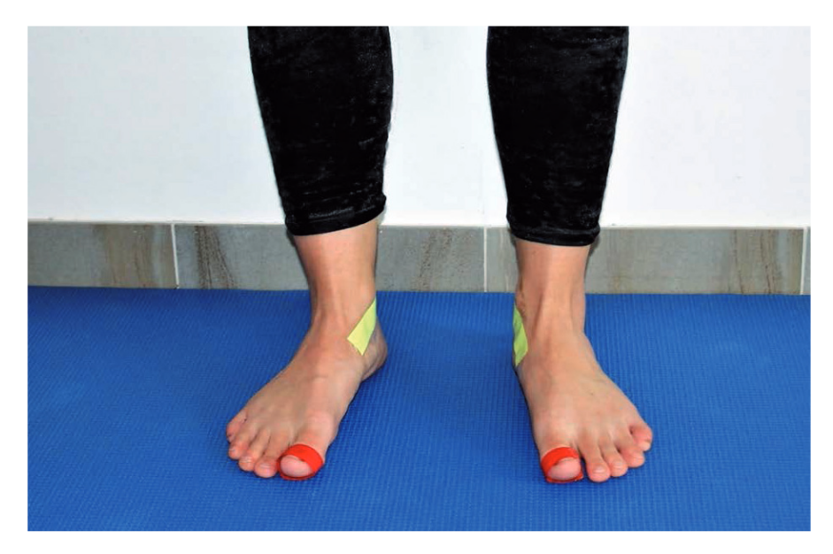
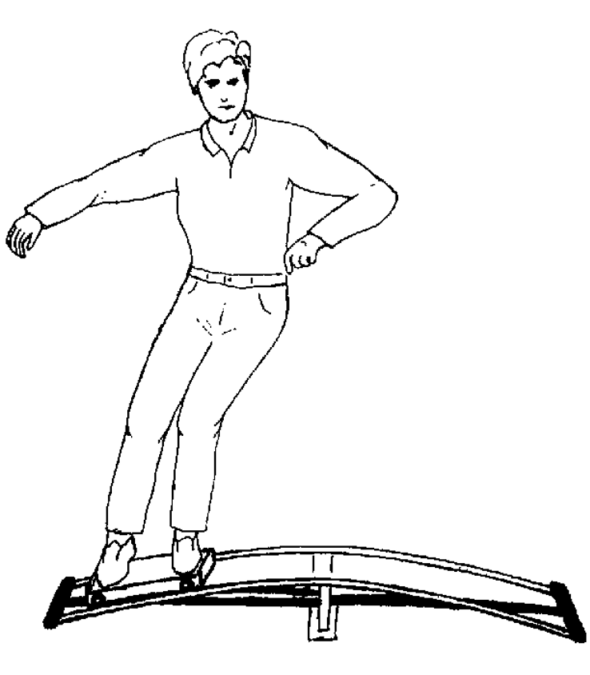

Directing Attention
Attention is a spotlight: what falls inside it gets processed, and what falls outside can vanish entirely. This lesson is about where you point that spotlight — and why the cue you give can make or break a movement.
These interactive lessons were built by Dr. Kuznetsov using AI tools, with extensive input from and review by the instructor, who is responsible for their content and accuracy.
Learning objectives
You should be able to:
- 1Describe inattentional blindness and what it reveals about attention as a selective, limited spotlight.
- 2Distinguish an internal focus of attention (on the body) from an external focus (on the movement’s effect).
- 3Explain the constrained-action hypothesis and summarize the evidence — including where the external-focus advantage breaks down.
- 4Write internal and external cues and choose between them for a PT/OT/dentistry task.
Count the passes
Let’s do a demo. In the video below, some players wear white and some wear black, and they pass basketballs among their own team. Your job: count how many times the players in white pass the ball. Watch the whole clip closely before reading on.
Finished watching? Before anything else — did you notice anything unusual walk through the scene?
Video: Simons & Chabris — “Selective Attention Test.” Based on Simons, D. J., & Chabris, C. F. (1999). Perception, 28(9), 1059–1074. doi:10.1068/p2952
Inattentional blindness
In the classic version of this demo, people counting basketball passes watch a person in a gorilla suit stroll through the middle of the scene, thump their chest, and walk off — and about half of viewers never see it (Simons & Chabris, 1999). When your attention is loaded onto one task, obvious unexpected events outside its focus can go completely unnoticed. This is inattentional blindness.
Remember the filter and limited-pool ideas from Lesson 1: attention selects what gets processed. We don’t record the world like a camera — we build our experience out of what we attend to. Whatever falls outside the spotlight may never reach awareness.
This matters in the clinic and the field
Each person below is focused on one thing. Predict what they miss — then click to unroll it.
Arousal makes this worse: under stress, attentional narrowing shrinks the spotlight even further, so even more goes unnoticed.
Internal vs. external focus
If attention is a spotlight, instructions and cues aim it. Two directions matter for movement — flip each card to see an example:
For each task below, the internal cue is shown. Predict the external version, then click to reveal.
| Internal cue | External cue | |
| Balance board | “Keep your feet level” | reveal“Keep the markers on the board level” |
| Golf pitch | “Relax your shoulders” | reveal“Focus on the club’s swing” |
| Vertical jump | “Extend your knees quickly” | reveal“Reach as high as you can toward the target” |
| Reaching (rehab) | “Straighten your elbow” | reveal“Bring your hand to the cup” |
Table after Wulf, Höß, & Prinz (1998). J. Motor Behavior, 30(2), 169–179. doi:10.1080/00222899809601334
How to write a good focus cue
Pointing attention the right way is only half the job — the cue itself has to be built well. A few design rules from the research make for better clinical cues.
Rule 1 · Choose the right kind of target
This is the one that matters most in applied settings. A cue “works” by pointing attention at a specific target — so decide what that target is:
- IAnatomical target (internal). Points to a joint, limb path, or muscle — “extend your knees,” “the swing of your arms.”
- EImplement or environment target (external). Points to the movement’s effect on an object, trajectory, or target — “the pendulum motion of the club,” “the flight of the ball.”
- ESurface marker / visual surrogate. When a skill is all about body form and has no implement, create an external target by attaching tape or markers to the body or equipment — and cue to those instead of to the body part.
The tape trick in action
How do you give an external cue for something as body-focused as pointing your toes? Laroëre et al. (2024) did exactly this for a static gymnastics hold: yellow tape on the navicular bone, red tape on the big toe, then cued athletes to “keep the red tape below the yellow tape.” Movement form improved versus the internal cue.

You can do the same thing: a sticker on a crutch tip, a target on the floor, a mark on a cup. Turning a body-focused task into a visible external target is often how you give an external cue at all.
Rule 2 · Keep it short
Long, vague, or convoluted instructions overload working memory and hurt performance no matter which way they point. A good cue is one short, concrete phrase.
Research studies also insist that the internal and external cues differ by only a word or two — same length and cadence — so the only thing that varies is where attention points. That tight matching is about keeping an experiment clean; in the clinic, you’re free to phrase the cue in whatever way the patient will actually understand and act on.
Laroëre et al. (2024). Kinesiology, 56(1), 44–52. doi:10.26582/k.56.1.5 · Wulf, Höß, & Prinz (1998). J. Motor Behavior, 30(2), 169–179. doi:10.1080/00222899809601334
The cue rewriter
Most coaching and clinical cues people receive are internal. Pick a task below (or type your own internal cue) and the rewriter shows a matched external reframe. Notice how each one follows the two rules from the last page: it points at a concrete external target (Rule 1) and stays short (Rule 2).
The examples come matched. For a cue you type yourself, the tool offers a general external reframe — a starting point to refine, not a rule.
To convert internal → external, ask: “What is this movement trying to do in the world?” Point attention at that effect (the cup, the floor, the target, the club) instead of at the body part.
Does it actually change learning?
Wulf and colleagues had people learn to balance on a stabilometer — a platform that tips side to side, where you fight to keep it level. One group was cued internally (“keep your feet level”); another externally (“keep the markers on the platform level”). A ski-simulator study used the same contrast.

Predict: which group learned the balance task better — and why?
An internal focus makes you consciously control movements your body normally handles automatically — this interferes with, or constrains, the motor system.
An external focus leaves those automatic control processes free to run, producing smoother, more effective movement.
Sound familiar? It’s the automaticity idea from Lesson 3 — don’t force conscious control onto a process that runs better on its own.
Wulf, Höß, & Prinz (1998). J. Motor Behavior, 30(2), 169–179. doi:10.1080/00222899809601334
Is external focus always better?
For about 20 years the consensus was yes — seven meta-analyses agreed an external focus was superior for performance and learning, across ages and skill levels (e.g., Chua et al., 2021). But the picture is more complicated than “external always wins.”
Skill level can flip the advantage
Several studies found an internal focus works better for less-skilled learners, while experts benefit from an external focus. Click to reveal each.
| Golf | revealLow-skill golfers pitched better with an internal focus; high-skill golfers with an external focus (Perkins-Ceccato et al., 2003). |
| Baseball | revealLess-skilled batters did better attending to their swing; skilled batters to the ball (Castaneda & Gray, 2007). |
| Bowling | revealBeginner bowlers who practiced with an internal focus were more accurate on retention/transfer; no difference for intermediates (Becker et al., 2025). |
A 2024 re-analysis argued the external-focus advantage has been overstated by publication bias: after correction, the average effect was close to zero and seemed to depend on unknown contextual factors (McKay et al., 2024). The practical takeaway isn’t “external always” — it’s match the cue to the learner and the task.
Chua et al. (2021). Psychol. Bull., 147(6), 618–645. doi:10.1037/bul0000335 · Perkins-Ceccato et al. (2003). J. Sports Sci., 21(8), 593–600. doi:10.1080/0264041031000101980 · Castaneda & Gray (2007). J. Sport Exerc. Psychol., 29(1), 60–77. doi:10.1123/jsep.29.1.60 · McKay et al. (2024). Psychol. Bull., 150(11), 1347–1362. doi:10.1037/bul0000451
Which cue would you give?
Cueing is one of the most practical levers you have. The choice depends on the stage of learning (Fitts & Posner) and the goal of the task (form vs. outcome). Work through these across the three professions:
- PTWalking with crutches. External: “place the crutch tips at the spot on the floor ahead of you.” Internal: “press down through your hands and swing your legs through.” Early on, a learner may need the internal cue to get the pattern; as it becomes automatic, shift external.
- OTUsing a spoon to eat cereal. External: “keep the spoon level as you lift it.” Internal: “try to keep your hands steady.” An external, task-relevant target often produces smoother, more functional movement.
- DDSInstrument control (e.g., a dental student learning a scaling stroke). External: “keep the tip tracking the tooth surface.” Internal: “control your wrist angle.” For a true novice, some internal guidance builds the pattern first.
Default to an external cue tied to the task goal — but for a true beginner, or a task that genuinely requires attention to body position, don’t be afraid to start internal and fade to external as the skill becomes automatic.
Summary & the next step
- 1Inattentional blindness: a loaded spotlight means obvious events outside it can go unnoticed — attention selects what we perceive.
- 2Internal vs. external focus: internal = on the body; external = on the movement’s effect.
- 3Constrained-action hypothesis: an external focus lets automatic control run; an internal focus can constrain it — often, but not always, an advantage.
- 4Match the cue: default external and tied to the task goal, but adjust for the learner’s skill level and the task.
Lesson 5 — Attention Under Pressure: why skilled performers choke, the mechanisms behind it, and the ironic effect of “don’t think about it.”
Your passphrase for this lesson is SPOTLIGHT. Enter it in the Canvas quiz to record completion.